Choosing a stack, working with an LLM, and staying in control
Presented as a web page, not a screenshot - see why in the next few minutes.
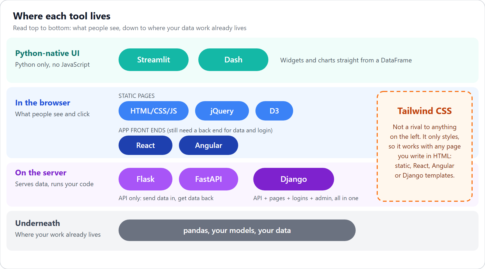
Same band = alternatives. Different bands = usually combine.
| # | Functionality | What it means |
|---|---|---|
| 1 | Presentation | Show static content |
| 2 | Styling & layout | Make it look decent and consistent |
| 3 | Client interactivity | Filters and tooltips, no page reload |
| 4 | API: providing | Expose data or a model over HTTP |
| 5 | API: consuming | A page or service calls an API |
| 6 | Server-side compute | Run pandas or a model per request |
| 7 | Persistence | Save records |
| 8 | Forms & CRUD | Validated create, edit, delete |
| 9 | Authentication | Who is this user? |
| 10 | Authorization | What may they do or see? |
| 11 | Session & state | Remember a user's choices |
| 12 | Background / long jobs | Work that outlives one request |
| Use case | Functions | Pick |
|---|---|---|
| Share a finished chart | 1, 2, 3 | Static HTML + D3 |
| Explore a dataset | 3, 6 | Streamlit |
| Peer dashboard | 3, 6 | Dash |
| Demo a model | 4, 6 | FastAPI - /docs is a free test form |
| Labeling or review tool | 7-10 | Django |
| Pipeline that ends in a page | 1, 3 | Python writes JSON, D3 renders it |
| Option | Good for |
|---|---|
| Django templates, Tailwind, daisyUI | A clean prototype with no React - the default |
| React, Tailwind, shadcn/ui | The best-looking and most customizable, highest setup cost |
| Dash + dash-bootstrap-components | Tidy dashboards out of the box |
| Django admin | Back-office screens for free |
| Tool | What you get |
|---|---|
| Django | Auth, sessions, groups & permissions - all built in |
| FastAPI | Nothing built in - docs show an OAuth2/JWT pattern to write yourself |
| Streamlit | Built-in OIDC login (Google, Microsoft) - but no roles |
| Dash | dash-auth: HTTP Basic only, no logout |
| React, Angular | Login screens only - real security lives on the server |
| Need | Tool | Catch |
|---|---|---|
| Tiny work after a response | FastAPI BackgroundTasks | In-process, no persistence/retries |
| Simple queue, no Redis | Huey + SQLite | Smaller ecosystem |
| Simple queue + Redis | RQ | Uses os.fork - no native Windows support |
| Full-featured queue | Celery | Windows is unsupported by the project |
| Django's own API | django.tasks (6.0) | Defines enqueue, ships no worker |
WEB IS SECONDARY HERE
An LLM makes writing the code cheap. That makes the choice of what to write - and who owns the logic - the one part worth your care.
| Django (one project) | FastAPI + React (two projects) | |
|---|---|---|
| Login & users | Built in | You build it |
| Ownership filtering | A queryset filter, one line | A check in every endpoint |
| Forms & validation | Automatic | Pydantic + client-side form state |
| Back-office screens | Admin gives users & labels for free | You build them |
| API for other systems | Add Django REST Framework | Built in, with automatic docs |
| Interface feel | Page loads, a little JS | Instant, app-like |
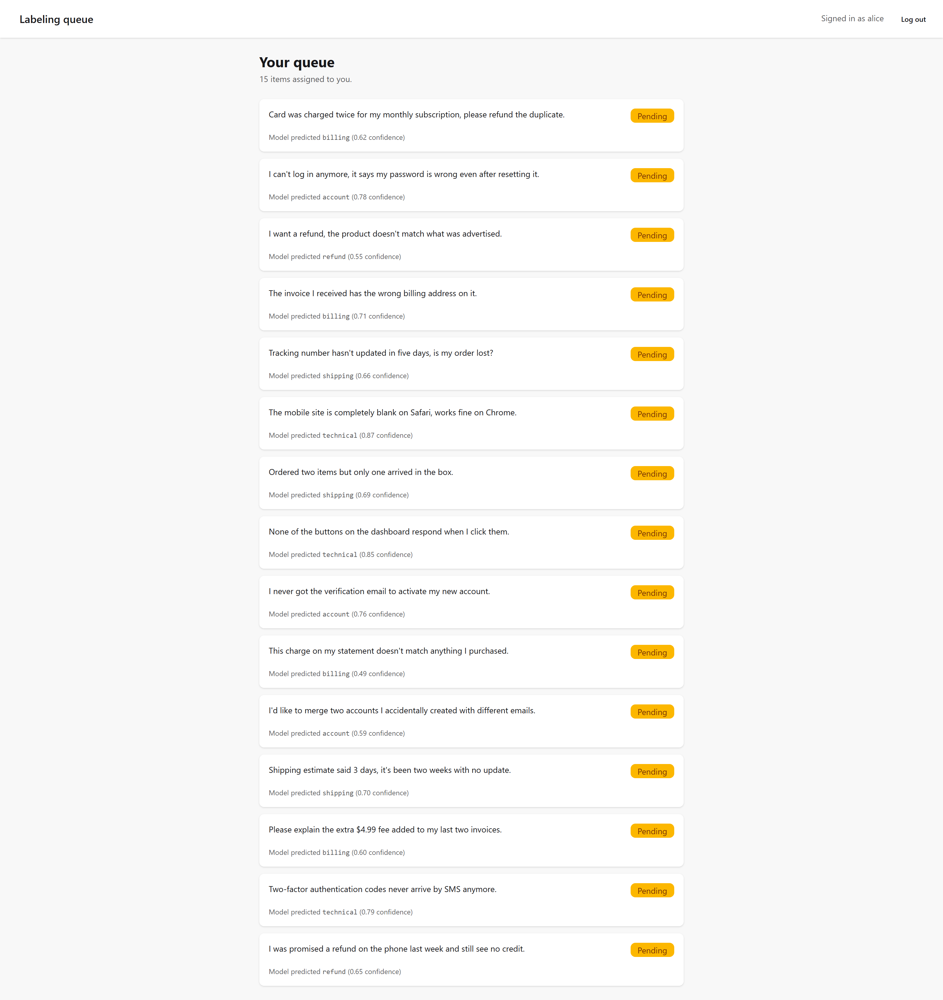
Alice's queue — only her tickets
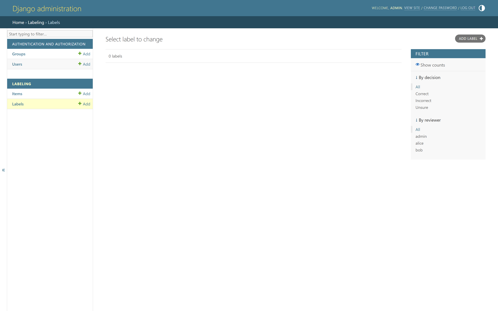
Admin: every reviewer's labels, free
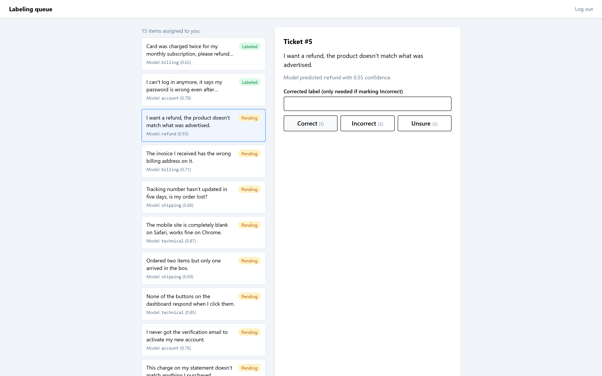
Keyboard-driven, instant, app-like
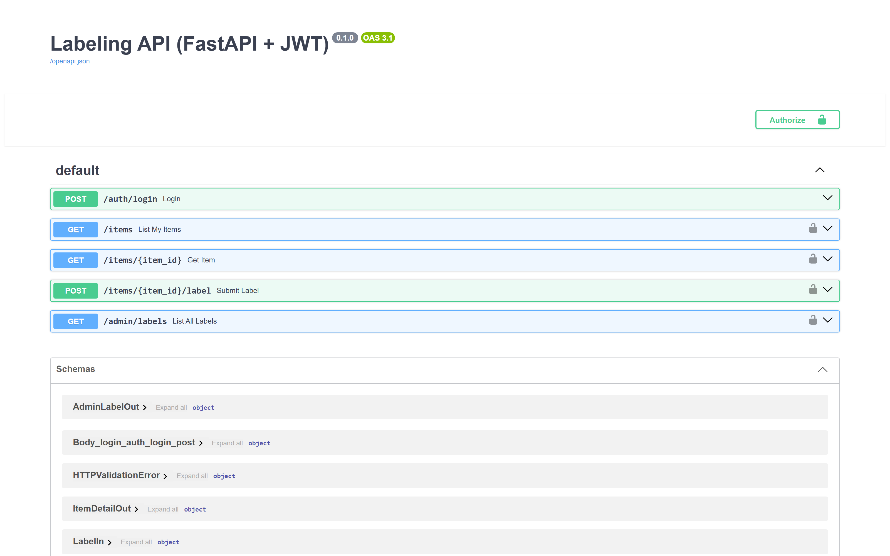
/docs — the free test form
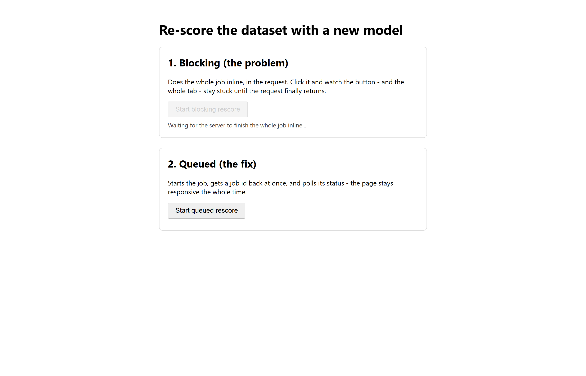
Blocking: button disabled, 'waiting for the server' - and that's it
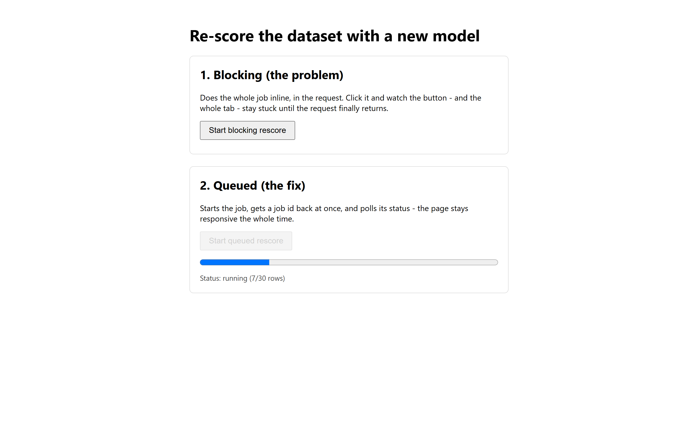
Queued: job id back at once, progress climbing, page stays responsive
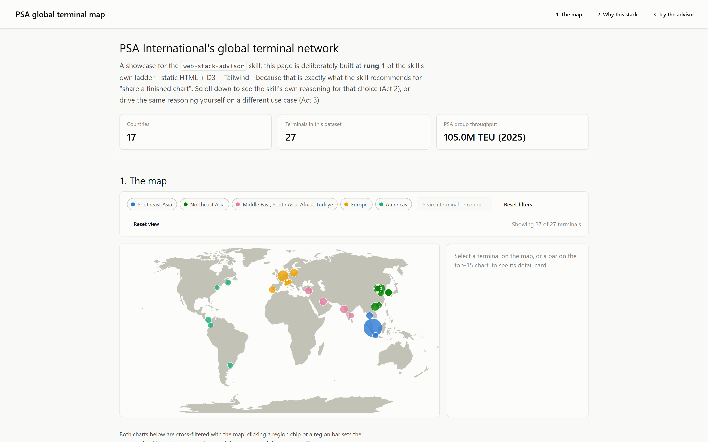
27 terminals, filterable, zoomable
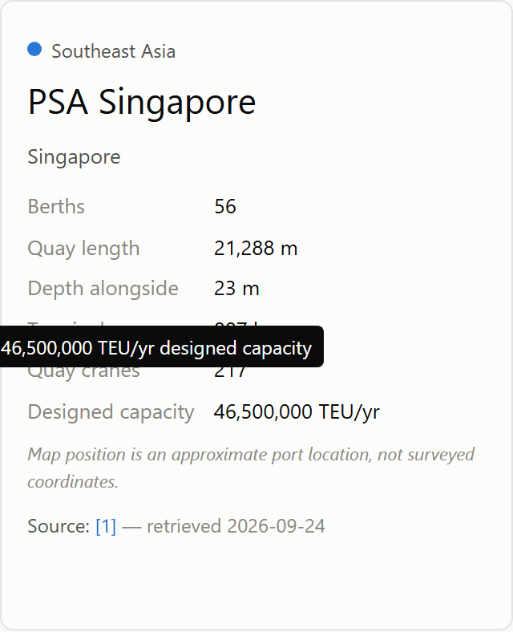
Click a terminal → a sourced detail card
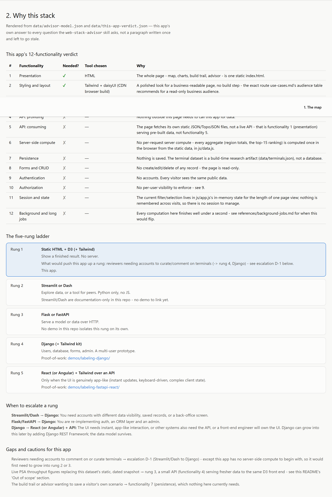
Act 2 — the 12-functionality verdict for THIS app
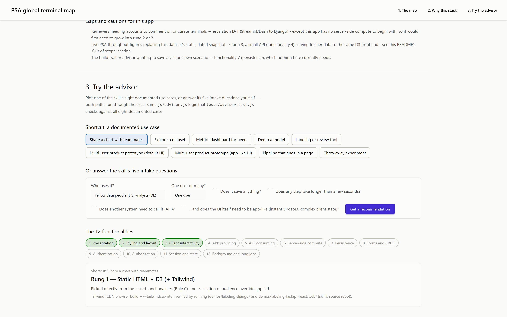
Act 3 — try the advisor live, same logic, tested
| Rung | Install |
|---|---|
| Static HTML + D3 | Nothing — or npm install http-server to preview locally |
| Streamlit | pip install streamlit |
| Dash | pip install dash |
| Flask | pip install flask |
| FastAPI | pip install fastapi uvicorn |
| Django | pip install django → django-admin startproject |
| React (Vite) | npm create vite@latest |
| Tailwind, no Node | standalone CLI, or the CDN browser build — even pip-installable |
| daisyUI | npm package, or paired with Tailwind's CDN build |
Decompose before you choose.